About Oakwaters
Meet Brennan Waters: The Person Behind Oakwaters Construction
Meet the owner and the values behind every renovation and excavation project.
October 2026 · 3 min readOakwaters Construction / The Journal
Practical ideas for better homes and better groundwork across Guelph and Southern Ontario.
Explore excavation services ↗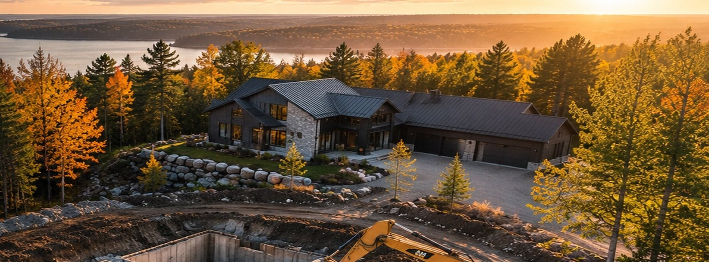
Meet the owner and the values behind every renovation and excavation project.
October 2026 · 3 min readChoose improvements that support how your household may change.
September 2026 topic · 5 min read
Exterior waterproofing begins with careful access to the foundation wall.
Excavation guide · Southern Ontario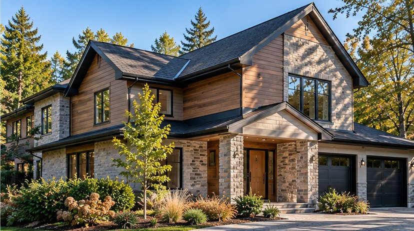
Sequence repairs and finish work for a durable result.
August 2026 topic · 5 min read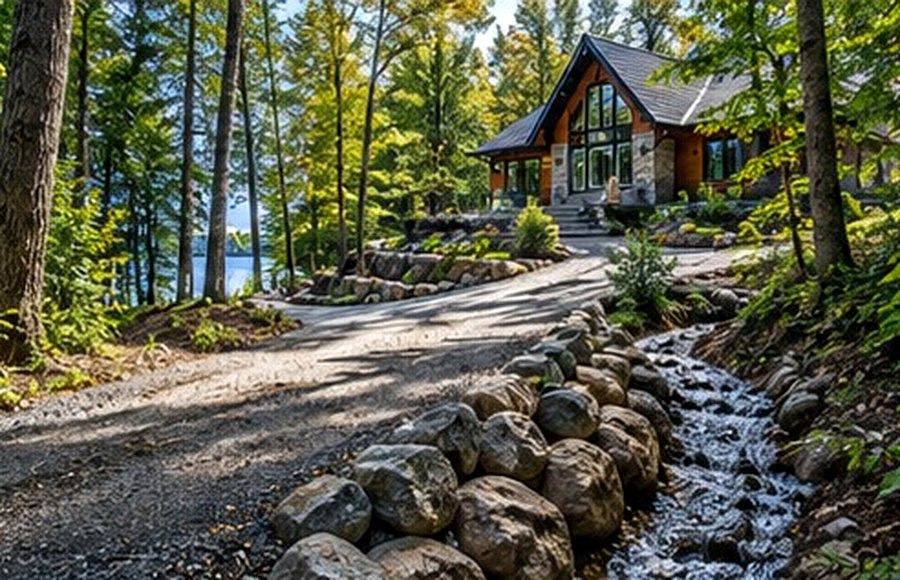
Heated driveways require careful excavation and coordination before the finished surface goes down.
Excavation guide · Southern Ontario
Coordinate sleeping, bathing, dressing, storage, and privacy.
July 2026 topic · 5 min read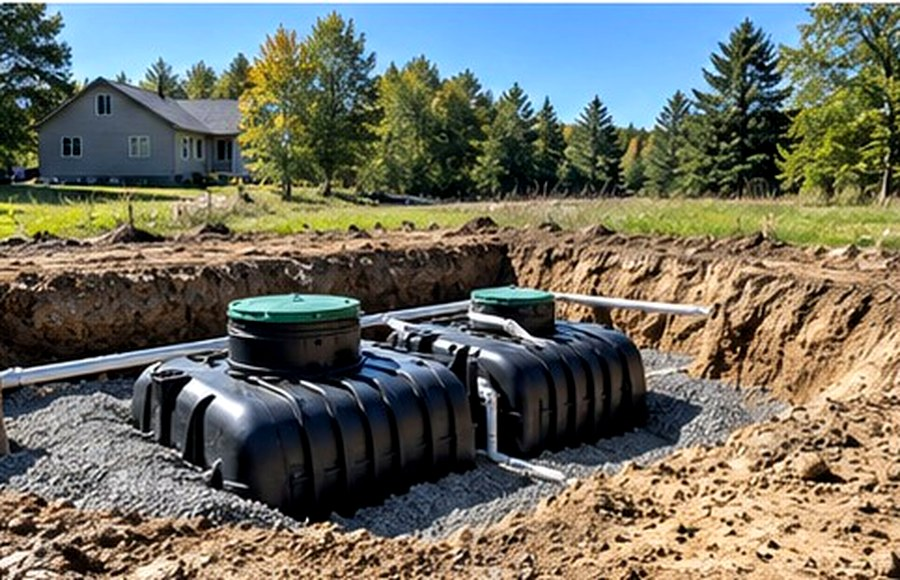
Connecting a private well to a house requires more planning than a straight trench.
Excavation guide · Southern Ontario
Prepare for handover with an organized review of the finished work.
June 2026 topic · 5 min read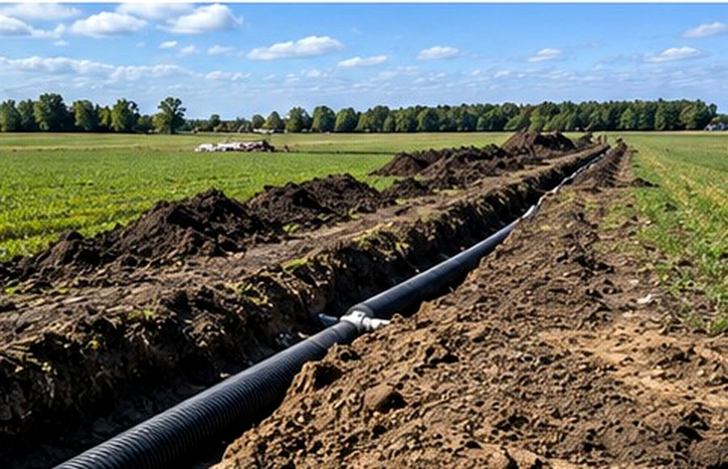
A farm pond needs a purpose, suitable ground conditions and a safe water-management plan.
Excavation guide · Southern Ontario
Use small architectural details to create a consistent interior language.
May 2026 topic · 5 min read
Utility excavation succeeds when routes and service conflicts are understood early.
Excavation guide · Southern Ontario
Coordinate illumination, reflection, and electrical planning.
April 2026 topic · 5 min read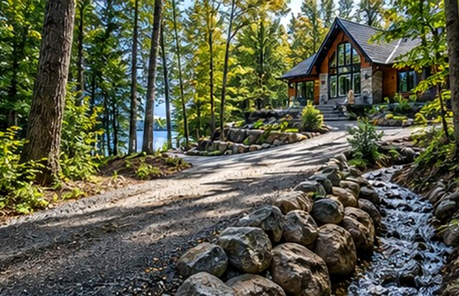
A swale is a shallow graded channel designed to move runoff without creating new problems downstream.
Excavation guide · Southern Ontario
Translate inspiration images into a clear hierarchy of needs.
March 2026 topic · 5 min read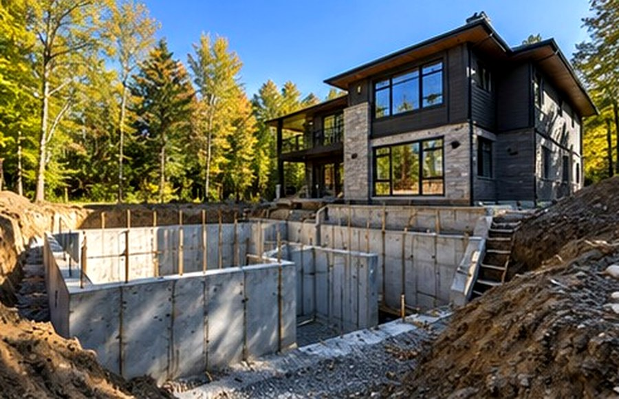
An addition needs a foundation strategy that respects the structure already in place.
Excavation guide · Southern Ontario
Consider foundations, drainage, access, and long-term upkeep.
February 2026 topic · 5 min read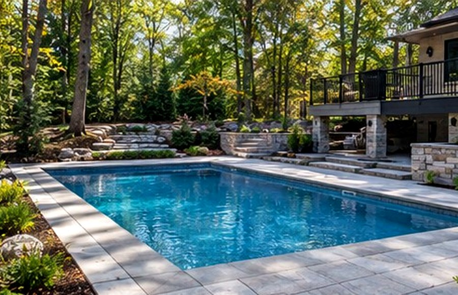
A precise pool excavation makes the next stages easier to build.
Excavation guide · Southern Ontario
Preserve defining details while upgrading function and comfort.
January 2026 topic · 5 min read
Preparing a wooded lot requires protecting what should remain as well as removing what cannot.
Excavation guide · Southern Ontario
Compare aesthetics with heat, staining, repair, and maintenance needs.
December 2025 topic · 5 min read
Farm access routes must accommodate heavy equipment in wet and frozen seasons.
Excavation guide · Southern Ontario
Improve workflow with counter space, storage, and durable finishes.
November 2025 topic · 5 min read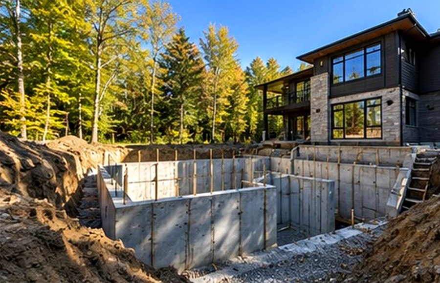
Ontario soil conditions can change the excavation plan dramatically.
Excavation guide · Southern Ontario
Balance independence, accessibility, privacy, and shared space.
October 2025 topic · 5 min read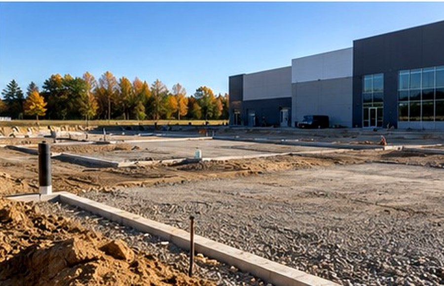
Small commercial sites often need substantial underground work in limited space.
Excavation guide · Southern Ontario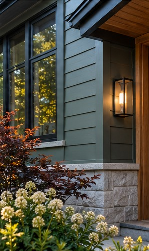
Evaluate colour alongside roof materials, masonry, trim, and daylight.
September 2025 topic · 5 min read
A rural entrance must support vehicles while keeping roadside drainage working.
Excavation guide · Southern Ontario
Know when professional review and municipal approval may be required.
August 2025 topic · 5 min read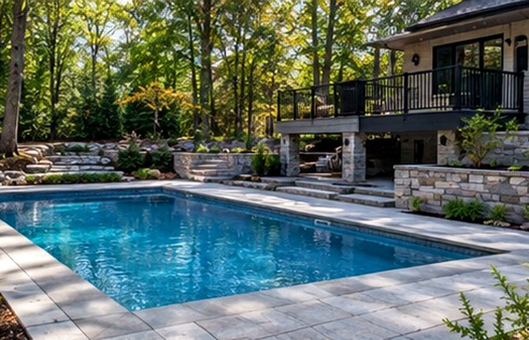
A durable driveway starts beneath the asphalt, concrete or pavers.
Excavation guide · Southern Ontario
Focus on internal organization, clearances, and hardware quality.
July 2025 topic · 5 min read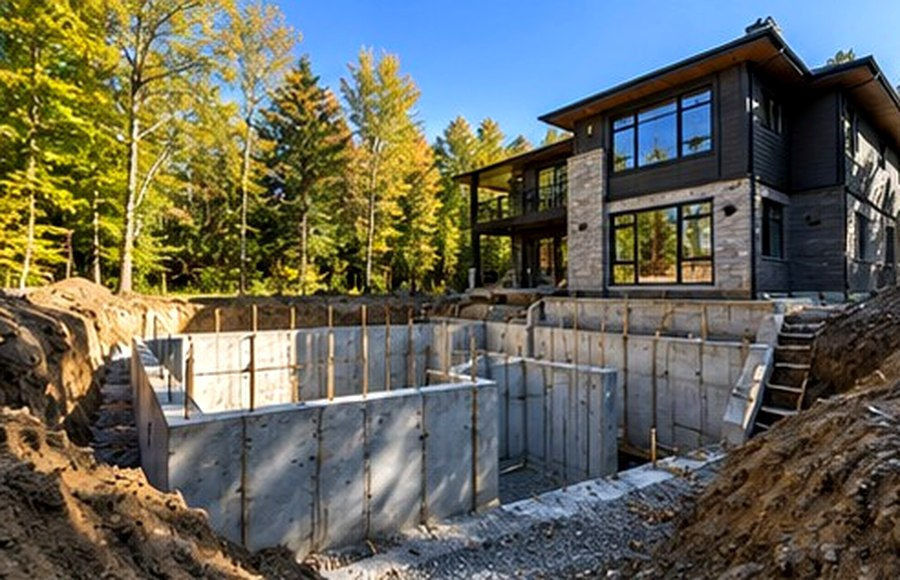
A foundation excavation is more than a hole in the ground.
Excavation guide · Southern Ontario
Use structure, lighting, and furniture zones to create connected spaces.
June 2025 topic · 5 min read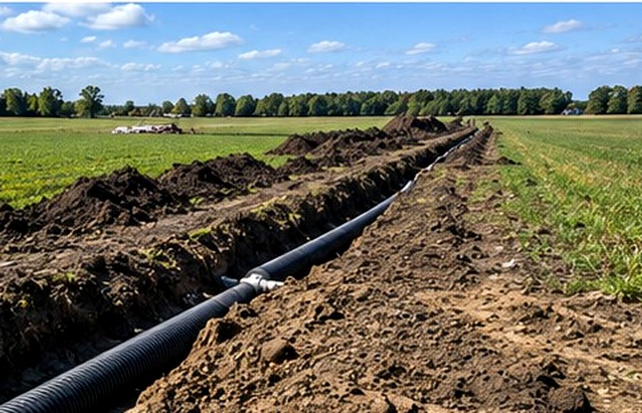
Agricultural tile drainage is a coordinated network, not simply a series of trenches.
Excavation guide · Southern Ontario
Improve storage, sightlines, and movement without chasing square footage.
May 2025 topic · 5 min read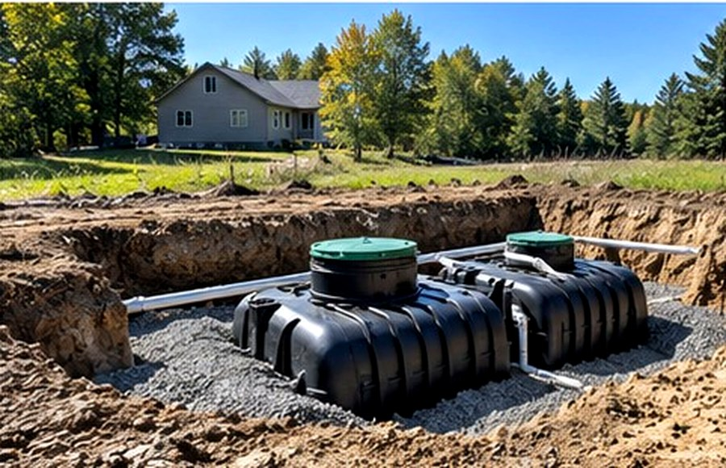
Septic excavation is tightly connected to site assessment and Ontario approvals.
Excavation guide · Southern Ontario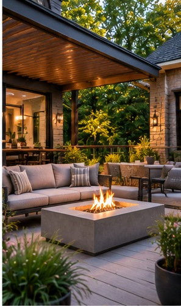
Create outdoor zones that suit sun, wind, privacy, and seasonal use.
April 2025 topic · 5 min read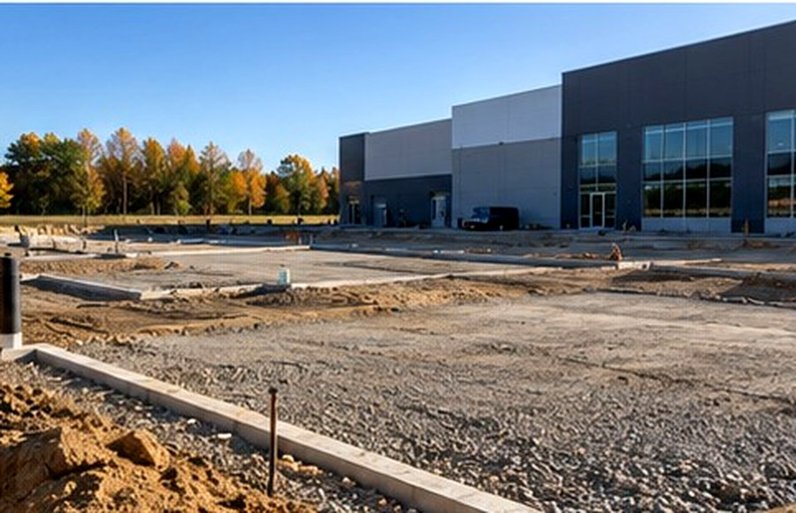
Commercial paving performs best when grading and underground services are settled first.
Excavation guide · Southern Ontario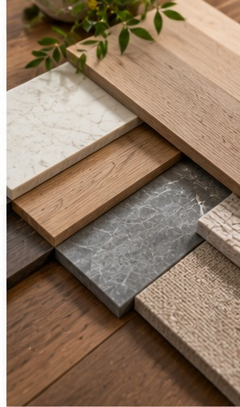
Match flooring to moisture exposure, traffic, comfort, and maintenance.
March 2025 topic · 5 min read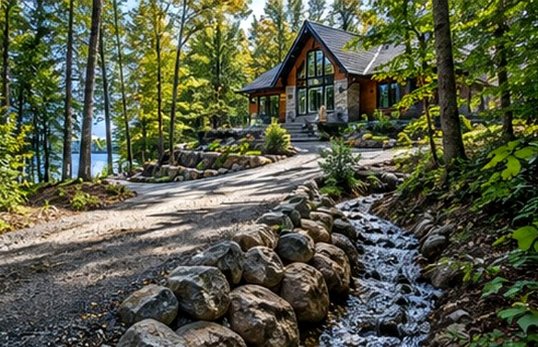
Water management works best when the entire site is considered.
Excavation guide · Southern Ontario
Plan around dust, noise, access, and temporary routines.
February 2025 topic · 5 min read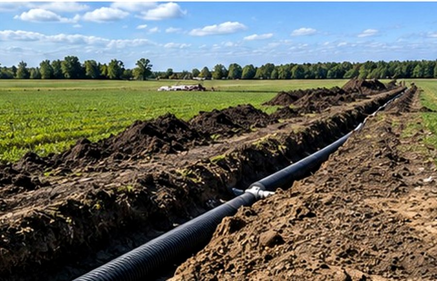
Agricultural structures demand stable foundations and coordinated utility routes.
Excavation guide · Southern Ontario
Design for concentration, video calls, storage, and future uses.
January 2025 topic · 5 min read
Plan window changes around comfort, proportion, and performance.
December 2024 topic · 5 min read
Balance visual character with slip resistance, grout maintenance, and scale.
November 2024 topic · 5 min read
Choose island dimensions that preserve movement and useful work surfaces.
October 2024 topic · 5 min read
Start with moisture, headroom, insulation, and egress before planning finishes.
September 2024 topic · 5 min read
Look beyond the total to understand what is actually being offered.
August 2024 topic · 5 min read
Design an entry that handles wet coats, footwear, and everyday transitions.
July 2024 topic · 5 min read
Build a budget around scope, allowances, and uncertainty.
June 2024 topic · 5 min read
Coordinate siding, trim, entry details, and drainage as one system.
May 2024 topic · 5 min read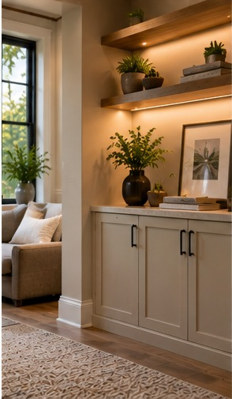
Treat storage as part of the architecture rather than an afterthought.
April 2024 topic · 5 min read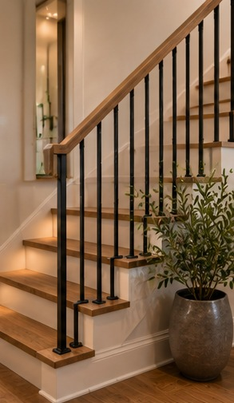
Use layers of light to support tasks, atmosphere, and architectural details.
March 2024 topic · 5 min read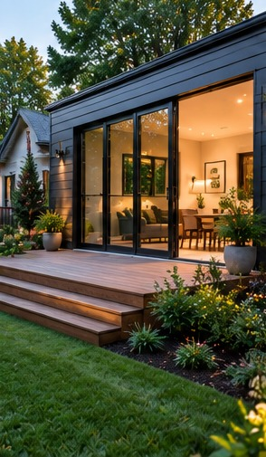
Think about structure, services, circulation, and the relationship to the existing home.
February 2024 topic · 5 min read
Select finishes for maintenance, repairability, and real household use.
January 2024 topic · 5 min read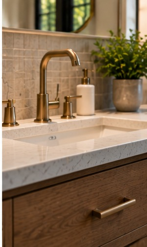
Make waterproofing, ventilation, and comfortable clearances part of the design conversation.
December 2023 topic · 5 min read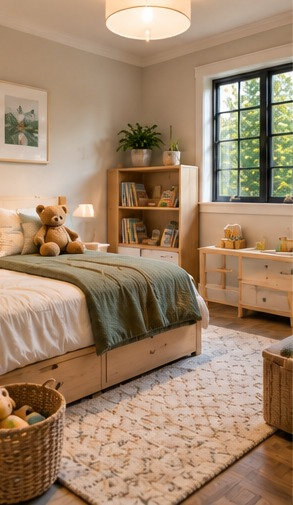
Evaluate circulation, preparation zones, storage, and lighting before choosing cabinet finishes.
November 2023 topic · 5 min readCreate a clear scope, establish priorities, and identify decisions that must happen before demolition.
October 2023 topic · 5 min read